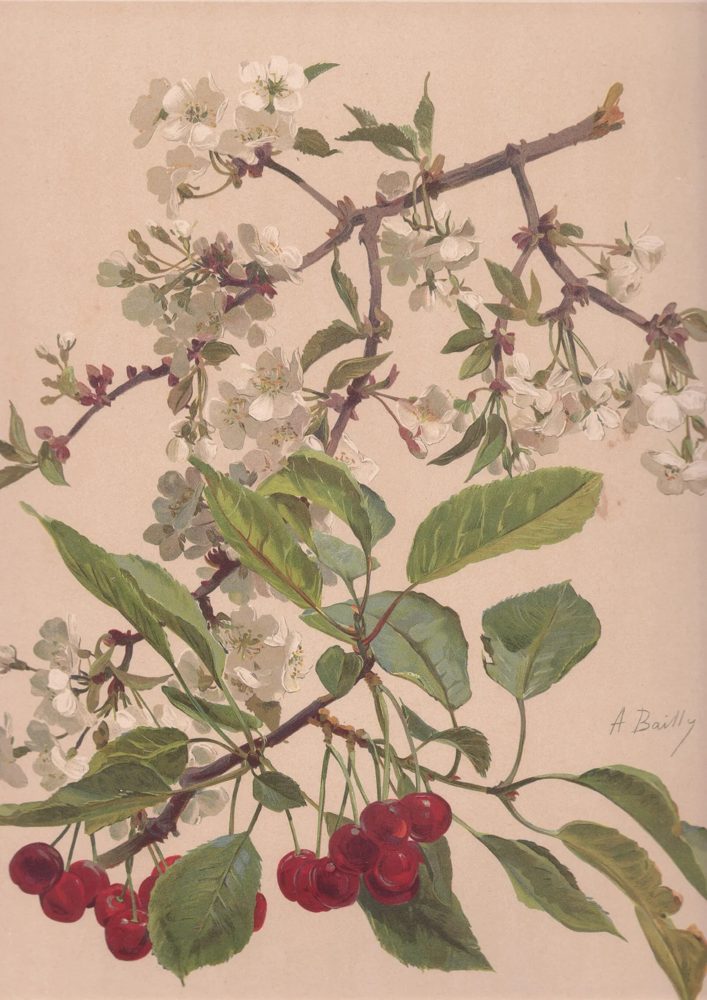

Kotori'sHomepage

ことり
Colorful
Journey
Journey
01
A little introduction
关于 Kotori
PRIVATE STUDY ROOM
Kotori's Colorful Seika
02
Things I keep returning to
兴趣切片
03
Notes from slow afternoons
博客随笔
04
Things I build and keep
项目一览
05
Find me elsewhere